Downtime List
 Vehicle Monitoring System by Philsaga Mining Corporation
Vehicle Monitoring System by Philsaga Mining Corporation
 Clicking "DOWNTIME LIST" from home interface will redirect you to a new page.
Clicking "DOWNTIME LIST" from home interface will redirect you to a new page.
- 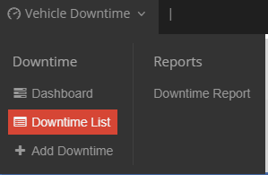Clicking "DOWNTIME LIST" from menu will redirect you to a new page.
- Below are the sample data encoded inside the system and the new interface that a user will have after clicking "DOWNTIME LIST" either from dashboard or from menu.
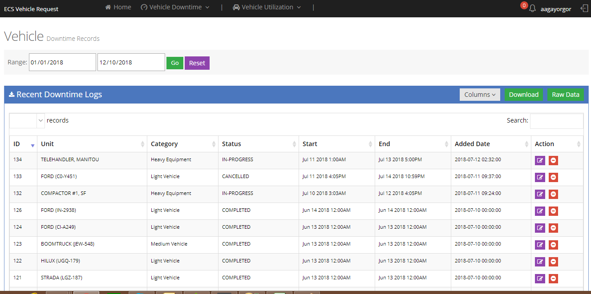
- To be able to limit the records a user is viewing; user can trim down the records being shown by the system by supplying date ranges.

- Sample below is the result of searching made to filter the viewing of records.
- Aside from date ranges, a user may opt to use the
 to be able to filter and trim down the viewing of records pertaining to the keyword which was inputted inside the search box.
to be able to filter and trim down the viewing of records pertaining to the keyword which was inputted inside the search box. - See sample below how searching is being done for a specific unit

- "ACTION" has two more functionalities; Edit 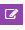 and Cancel which play a crucial roles to determine the status of a specific transaction.

- Clicking "Edit" will let you see a new modal window where a user will be able to correct or change some details. A greate impact on this part of the system is the change in the status of of the downtime details everytime a user do an updates.

- There are different status of downtime for vehicle. These are as follows. See sample below for the status of vehicle downtime.
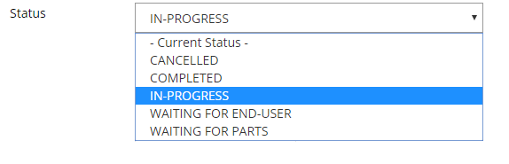
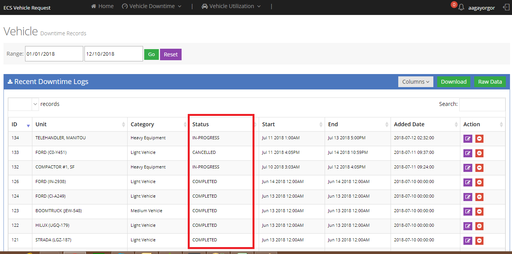
- There are also different downtime categories. These are as follows:
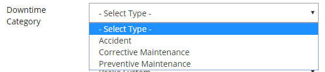
- There are also different downtime types. These are as follows:
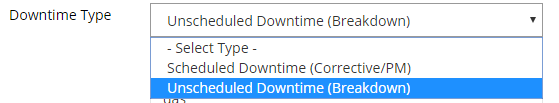
- There are also different repair types. These are as follows:
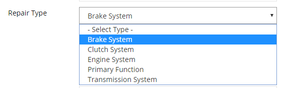
- Clicking "Cancel" will let the transaction be vioded or irrelevant and will not push through other stages of status.
- Columns
 pertains to different fields shown on the list; user may hide/unhide unnecessary column(s) by checking or unchecking the chechbox.
pertains to different fields shown on the list; user may hide/unhide unnecessary column(s) by checking or unchecking the chechbox. - Each column being shown is also sortable by clicking the header of each column.
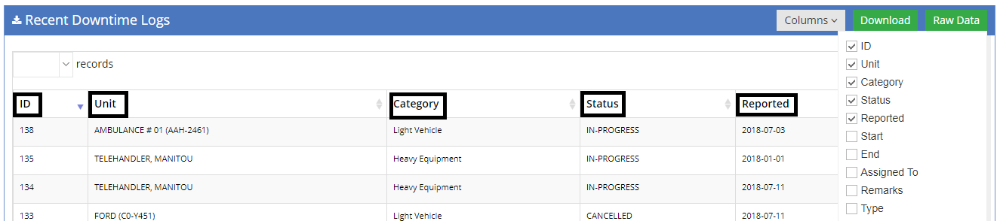
- Clicking "Download" will let a user donwload an excel file of the data being shown by the system whether filtered or not.
- See sample "Download" below;
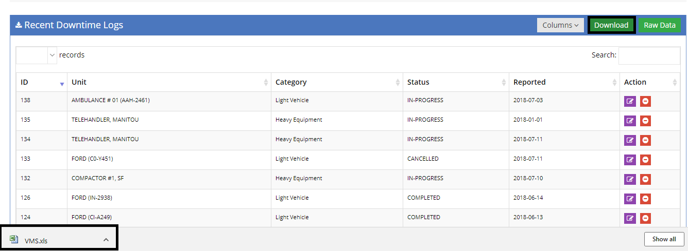
- Clicking "Raw Data" will open up a new page where all data are being presented unfiltered which means data from the very beginning of transactions even if its way back many year ago are being presented.
- See sample "Raw Data" below;

- Clicking 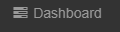 will let you go back to the default page view.
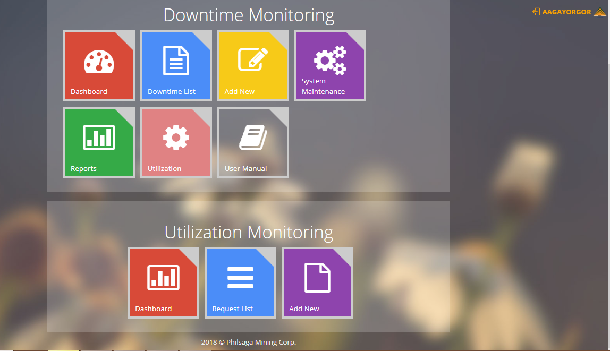
Created with the Personal Edition of HelpNDoc: Generate EPub eBooks with ease